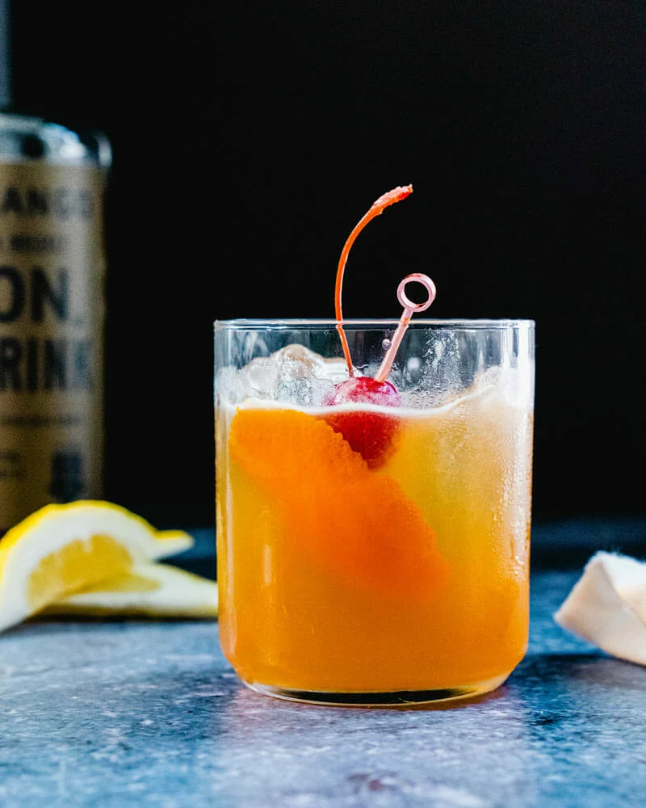
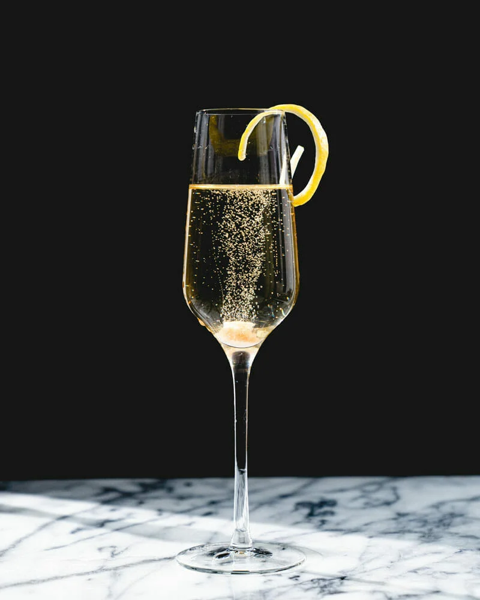

whiskey, lemon juice, maple syrup or simple syrup


gin, lemon, simple syrup or maple syrup, egg white, soda water

bourbon whiskey, lemon juice, simple syrup or maple syrup, red wine
vodka, cranberry juice, cointreau, lemon juice, simple syrup or maple syrup

The Classic Champagne Cocktail
sugar, angostura bitters, champagne, cognac or brandy

white rum, lime juice, simple syrup or maple syrup
sparkling wine, like prosecco or champagne, aperol, soda water
cognac,orange liqueur, lemon juice
amaretto, bourbon whiskey, lemon juice, simple syrup or maple syrup, egg white
orange juice, prosecco, cointreau

aged rum, cointreau, lime juice, orgeat syrup, dark rum